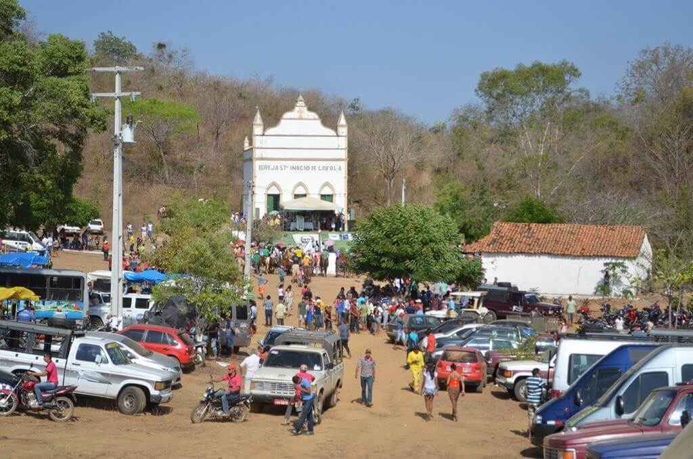
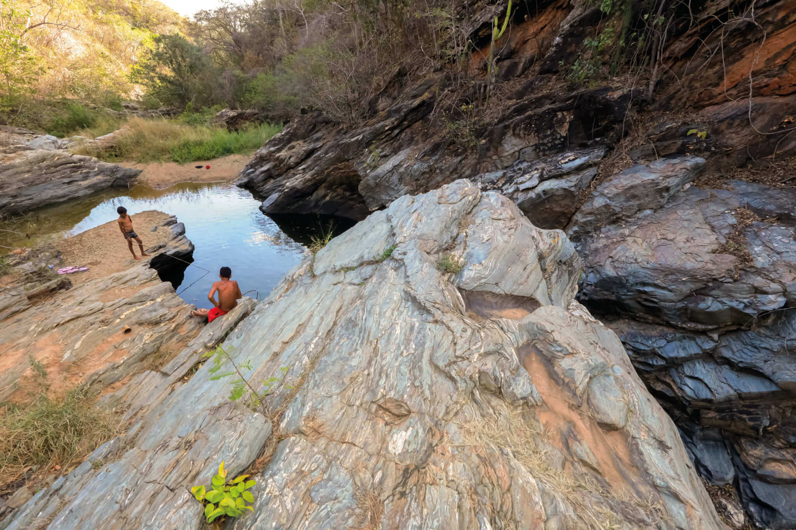
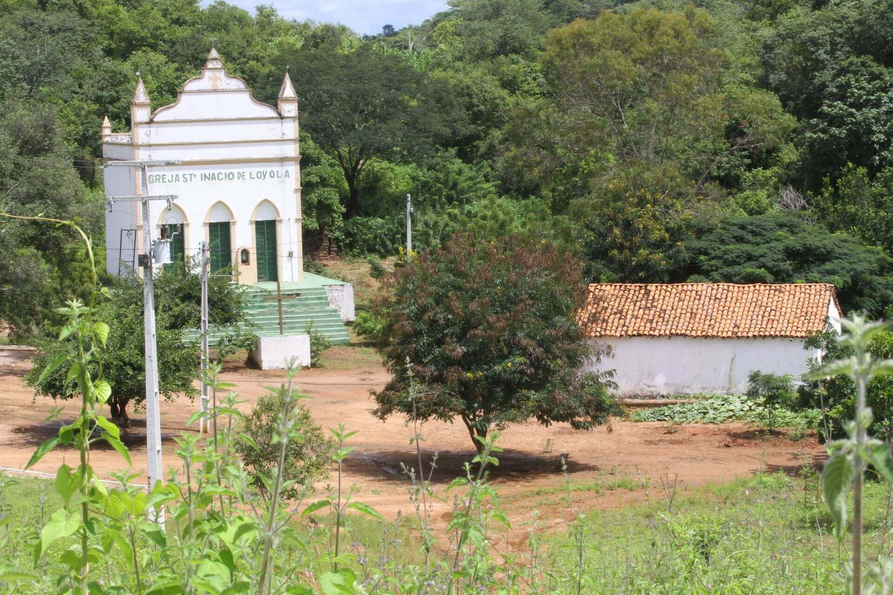
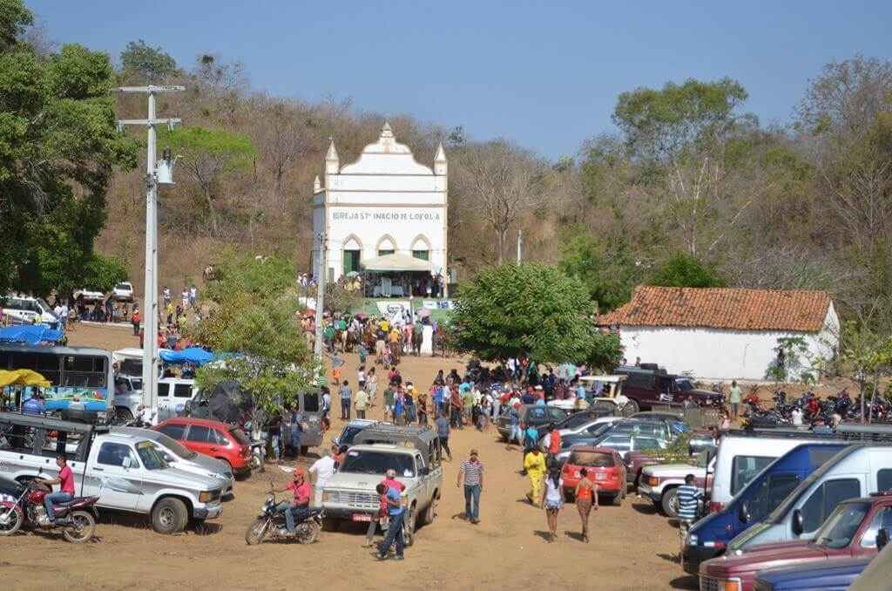
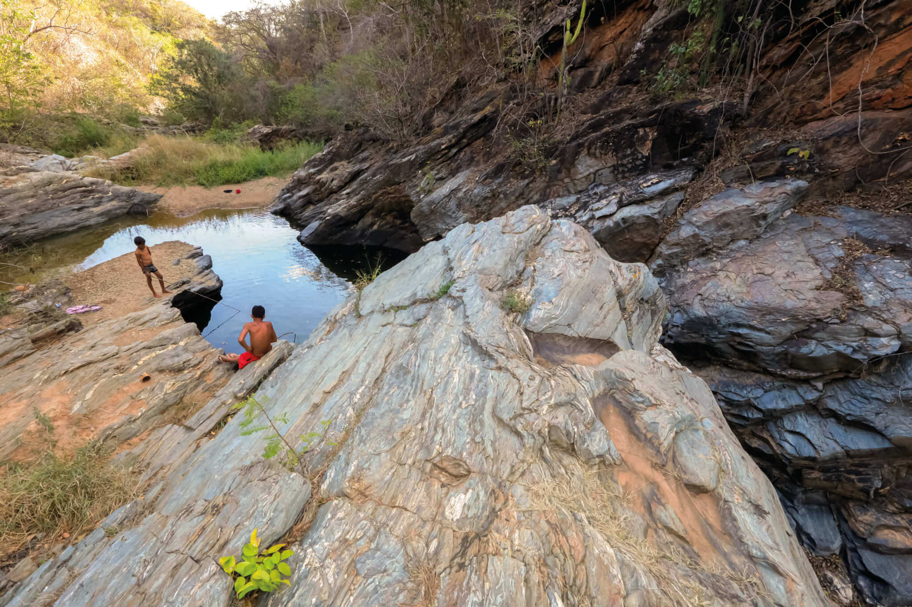
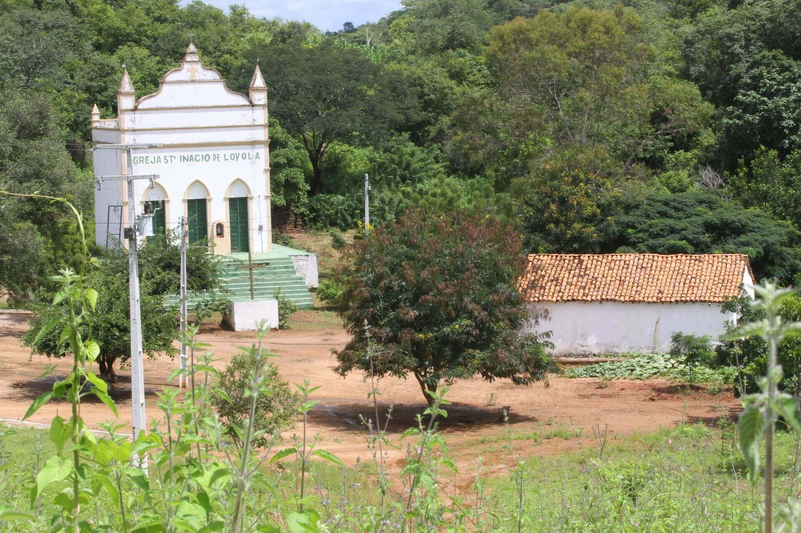
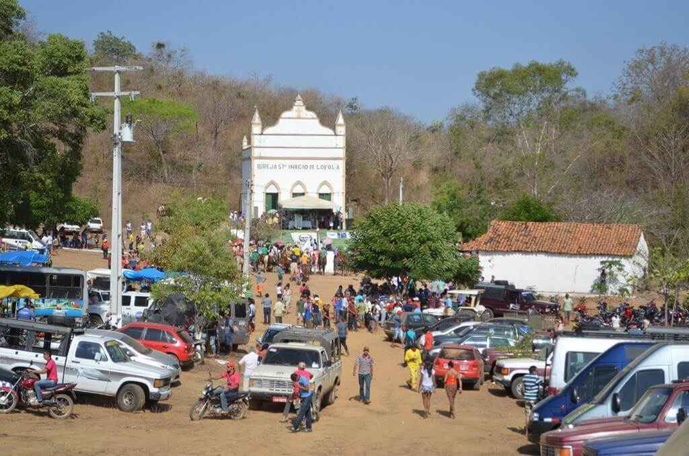
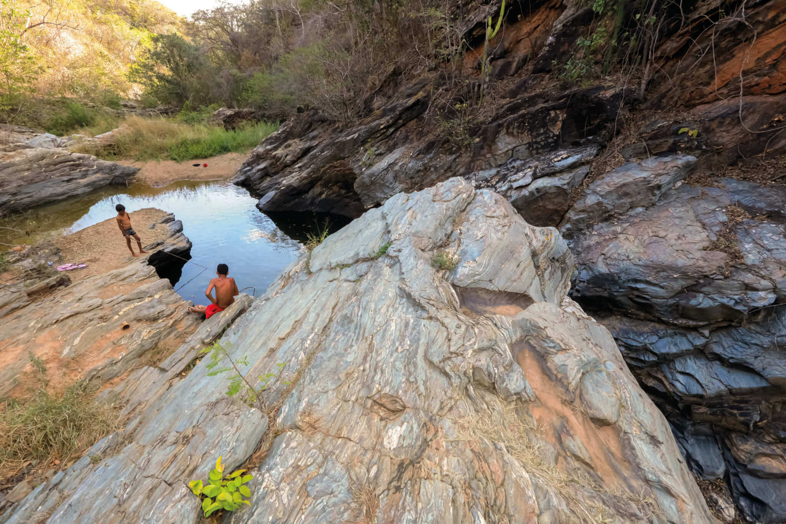
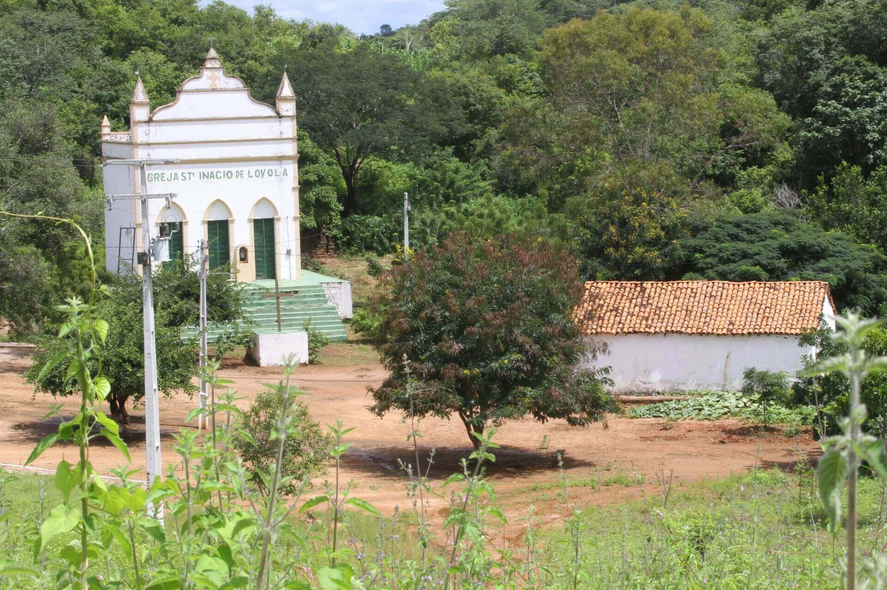

Fotos e Sua Localização

 





O Caldeirão da Santa Cruz do Deserto está localizada no Crato, Ceará. Para mais detalhes, veja o mapa abaixo:
O Caldeirão da Santa Cruz do Deserto foi uma comunidade igualitária criada pelo beato José Lourenço em uma fazenda cedida pelo Padre Cícero no Crato, Ceará. Baseada na religião e na divisão coletiva da produção, atraiu muitas famílias do sertão, chegando a ter mais de mil habitantes. Após a morte de Padre Cícero em 1934, a comunidade cresceu, mas enfrentou oposição da elite local e da Igreja, culminando na destruição pelo governo de Getúlio Vargas em 1937. O massacre deixou centenas de mortos, e os corpos nunca foram encontrados. Apesar da tragédia, o Caldeirão é visto como símbolo de organização social alternativa e pode se tornar um Monumento Natural de Interesse Cultural e Ambiental.



O Caldeirão da Santa Cruz do Deserto está localizada no Crato, Ceará. Para mais detalhes, veja o mapa abaixo: